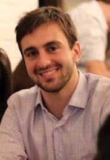

Please describe any relevant past experience
3.5 Years in Student Council in undergrad institute
3 years as class representative
Student Leader for University branding committee
What are your goals/vision for your committees of choice? How do you think you can contribute to them?
I would like to work as a liaison between current students and the alumni of the school towards the development of school and student - specially for the field career mentoring.
I would like to improve and increase buzz on digital media about Columbia University and its offering and culture.
Any other information you would like to share
Introduced Google Apps for Education in my undergrad institution (BITS Pilani) which is now used by over 10,000 students, faculty and staff members
Student Leader of Branding Committee - managed Facebook, twitter and other online & offline media
Digital Media Experience - Worked with Google in Advertising business and LG electronics Marketing for Middle and Africa Markets.
Please describe any relevant past experience
I have worked for two years in Analytics industry and have worked for fortune 500 clients in pharmacuetical and consumer packaged goods industry.
What are your goals/vision for your committees of choice? How do you think you can contribute to them?
I would like to build a strong network of Alumni with the students and helped them gain knowledge from the vast experience of the esteemed alumni of this institution. I would like to hold regular meets of alumni across different industries for students so that they can be up to date with the current industry scenario and help them shape their career accordingly.
Any other information you would like to share
i have worked on highly intensive projects in the analytics domain and was responsible of developing algorithms for attribution modeling and using bayesian analysis in assortment optimization. I have helped these two projects to scale across whole Europe for my client and helped increase sales for them.
Please describe any relevant past experience
Undergraduate:
Served as the Principal Designer for the UC Berkeley Construction team where I was responsible for coordinating budget and schedule needs with the Project Managers while coming up with a creative solution.
Professional:
Served on the Diversity Committee where my responsibilities included organizing the activities for the my company's "Inclusion Week." Activities included team bonding events and seminars by HR professionals.
Recruited by the Business Development team to participate in outreach through evening networking functions, where I had to interact with professionals from different industries who could potentially be our clients or partners.
What are your goals/vision for your committees of choice? How do you think you can contribute to them?
My goal (for any three of the selected committee) is to increase awareness among our engineering graduate student peers of the breadth of opportunities available. Whether it is within our industries (alumni affairs), outside our industries (interschool), or within SEAS (social), by highlighting the diversity of our education and experiences, I think EGSC could continue to play a role in shaping a more diverse experience for the SEAS student body.
Please describe any relevant past experience
*Elected to Deloitte's young leaders panel. Led initiatives and interacted with Chairman and Global Executive Board of Deloitte
*Elected as student recruitment cell at college. Oversaw rise in recruitments from 25 to 120+ students during tenure
*Youngest member of Urban affairs council - reporting to the senior-most bureaucrat in the district on matters relating to transportation, utilities, recycling etc.
What are your goals/vision for your committees of choice? How do you think you can contribute to them?
Career development: We clearly need to push ahead aggressively on recruitments as there is a perception that we are punching below our weight. Two suggested steps:
a. Alumni brand ambassadors: The IEOR department has 2500+ alumni occupying positions of influence in industry. Through our Alumni affairs council, we reach out to these alumni and use their guidance in shaping curriculum and keeping it up to date. Additionally we could leverage their positions to suitably position IEOR as an excellent talent pool.
b. Enhance inter-department coordination: Much more can be done to encourage the various departments to coordinate amongst themselves to maximize the opportunities for students.
Academics: There should be greater ease in cross-registering for courses across the university especially the B-School.
Alumni affairs: Strengthen and deepen existing relationships with Alumni. Co-ordinate with local chapters to engage alumni more effectively for University milestones, achievements etc.
Setting up of Alumni mentorship program with grad students for guidance on matters relating to academics, career development etc.
Any other information you would like to share
I think the IEOR department has some of the brightest minds across the university. It would be a great privilege to put forth their view and represent their interests.
Please describe any relevant past experience
Last year, I served as a student ambassador at the Alumni association of my school. In this role, I organized and participated in debates with young alumni over the evolution of education at the school and issued tailored recommendations to the dean. I also organized a student/alumni mixer where students could meet young alumni informally around a glass of wine.
As an undergraduate, I also got involved in several student associations and sports club, both in leadership positions and workforce support.
What are your goals/vision for your committees of choice? How do you think you can contribute to them?
If I sit on the Alumni Committee, I will strive to develop further the relations with young alumni. I would like to ensure that alumni from all engineering departments are represented during Alumni events so that all students may have meaningful interactions. I will also encourage connections with alumni through the organization of social and professional events. To do so, I will leverage my communication and organization skills to coordinate with the other groups in charge of alumni within SEAS and Columbia. I am convinced that together we can attract alumni from all ages and backgrounds to events that will foster exchange between generations.
If I sit on the Academic Affairs Committee, I would like to contribute to the reflection on course content and how this articulates with the job requirements that students will face after graduation. To do so, I would like to build on alumni feedback on the challenges they faced as fresh graduates. I will also dedicate my time and my negociation skills to improving student quality of life.
If I sit on the Career Development Committee, I will leverage our relations with alumni to target the key skills firms are looking for. In addition to our excellent academic background, I intend to provide every Columbia's graduate student with a valuable professional state of mind.
Any other information you would like to share
I intend to thoroughly attend and participate in debates, whichever committee I will serve. I served in similar groups in France and loved my experience there. I am now looking forward to discovering new issues and stakeholders at Columbia. I am ready to learn and I hope I can help in the advancement of the EGSC by sharing my ideas and personal experience.
I also plan on communicating and giving feedback to IEOR students on discussions and decisions met at the EGSC so that everyone has a say in the ongoing debates and events.
Please describe any relevant past experience
* Department Representative, 2011-2013: Responsible for Department and Placement co-ordination.
* Served as Senior Hall coordinator, Student Welfare Group, 2011-2013, supporting Counselling Centre at IIT.
* Joint Secretary, Social and Cultural Events, 2008-2010: Responsible for managing cultural and social events
at College.
* Worked at Flipkart, India(e-commerce company), in the project management and data analysis role.
What are your goals/vision for your committees of choice? How do you think you can contribute to them?
General Vision is to:
* Connect with all IEOR graduates (MS, PhD).
* Support colleagues in their times of need.
* Dedicate my time where it is worth.
Academic Affairs:
* Given my understanding, cooperative and supportive nature, I will be a great help at times of these crucial moments.
Budget:
* Pursuing my MS in Operations Research and an inclination towards quantitative courses make me suitable for the post.
* Also I worked in the costing and planning team in my previous job, and have relevant experience.
Administrative:
* I have served as the Joint Secretary during my undergraduate studies (2008-2010) and was responsible for managing cultural and social events.
Please describe any relevant past experience
1. I was a senior volunteer and fundraiser at University of Illinois. I have recruited and trained over 30 volunteer fundraisers and planned and promoted 5 successful fundraising events including auctions and dinners which generated over $3500 in pledges.
2. I was program leader at Xinyu Volunteer Association Fundraising Program. I have raised over 12,000 Chinese Yuan to Xinyu Volunteer Association for over 100 disabled individuals.
What are your goals/vision for your committees of choice? How do you think you can contribute to them?
One of my goals for my graduate study at Columbia University is to establish an after-class study/networking club to gather students from diverse academic background. Engineering department attracts students from various fields, therefore, it is likely that students major in finance have trouble in understanding complicated math principle; or students major in engineering are unfamiliar with economics theories. I believe everyone would benefit from this type of event since it could not only provide a stage to enhance social skills, but also encourage students to actually help and learn from each other. Moreover, we could invite our alumni to give speeches and share their experience/career advices to broaden students' perspectives.
To sum up, my goal is to bring more engineering students to get involve in this community, meet more people and learn more knowledge, and hopefully build a strong connection between themselves and EGSC so that years from now, our current students who will be experts in various fields would like to come back to EGSC to share experiences and encourage more students to pursue their dreams.
Any other information you would like to share
1. Campus Newspaper Designer at The Daily Illini
2. Credit Risk Intern at China Citic Bank
3. Researcher at Illinois Geometry Lab
Please describe any relevant past experience
I was the President of Public Relations department of Student International Communication Association (SICA) when I was an undergraduate student in Peking University. SICA is one of the largest and most influential student clubs in Peking University. The Public Relations department is in charge of cooperations with our sponsors, our alumni and other student international communication associations nationwide. We also help organize lots of social events and international communication programs, such as SICA's 15 year anniversary. I lead a team of more than 30 core members. We meet twice a week, or more frequently when necessary. Not only does our department successfully organize and hold all kinds of activities, but we keep great relationships with each other.
What are your goals/vision for your committees of choice? How do you think you can contribute to them?
My goal for these committees is to provide better services to more graduate students in SEAS. I have great communication skills, which is a key to work in these committees. My previous student organization experiences are much related with organizing social events, and having frequent communications with professionals and alumni. I am always willing to help. It would be an honor for me to be a member of these committee and work for other graduate students in SEAS.
Please describe any relevant past experience
I was an executive committee member of Columbia University Chinese Students and Scholars Association. I helped organize and execute events for students in order to build a bridge between China and Columbia community.
What are your goals/vision for your committees of choice? How do you think you can contribute to them?
I would like to help enhance the overall student life experience at SEAS. I have been in SEAS for two years and know the academic environment very well. So I believe I can help new students get adapted to their new school quickly. In addition, I am from China. SEAS has a great portion of Chinese students with whom I share the similar educational and cultural backgrounds. This enables efficient communication among us that will contribute to improvement of every aspect of the school.
Please describe any relevant past experience
At the Siam Cement Group, my side work position is a Treasurer of Value Revolution Team (Jan 2013 - May 2014)
My main tasks are:
- Organized creative activities to foster relationship among people in the department by reducing gaps between senior management level, middle management level, and operation level.
- Promoted the ideas of teamwork and fundamental ethics through a business outing.
- Estimated and performed budget control of the activities using historical data and current expenditure.
During my undergraduate program, I engaged in the following activities:
- Teaching Assistant and Group Leader, 5-day English camp
- Bangkok Flood Relief Volunteer, Rajavidhi Hospital
- Coordinator, 9th Industrial Engineering Sports Game
What are your goals/vision for your committees of choice? How do you think you can contribute to them?
My vision for the committees is to really engage people into activities and get them to know each other better. As I see now, there are a few of those who are still shy and do not really want to come out from their comfort zone to make new friends and connections.
My idea of bringing them together is to come up with small group activities where the people get to know each other in a small group instead of a big crowd.
The committees themselves should be diverse and the people must be creative and positive. I think I can contribute by bringing new ideas on how to split up works and run the committees with joy.

Renato Georgiadis Rosiak
Please describe any relevant past experience
Experiences related to Student Council:
- Vice President of high school students association, working mainly with budget, accounting, events planning and execution (2008).
- Member of Industrial Engineering students association at Federal University of Rio Grande do Sul, Brazil.
What are your goals/vision for your committees of choice? How do you think you can contribute to them?
In high school, I worked for a year at the students association, achieving the highest cash in bank so far, due to well organized events and fundings. I believe that I can put my previous experience and knowledge for the benefit of EGSC.
Representing EGSC would be challenging, but the possibility of helping EGSC to pursue its goals makes me excited and sure that I can learn a lot with this experience and make my contributions.
Please describe any relevant past experience
I was a First year student tutor in my undergraduate study. As a tutor, I gave new student suggestions and help them find their best niche in university. I also create the social event for new students knowing other people such as senior students and alumni.
What are your goals/vision for your committees of choice? How do you think you can contribute to them?
Since I have the experience for holding alumni affairs before, I hope I can support the students in SEAS efficiently getting to know the excellent alumni they expect to. I will contact the alumni diligently and make more opportunities for SEAS students communicating with them. My goal is to let the past students, current students and future students in SEAS connect closely with brilliant career paths.
Please describe any relevant past experience
I worked as a tutor and grader for the past three years with Professor Varodayan in the math department. I coordinated my own study schedule with the tentative grading schedule, and I always finished my work at least two days before the deadline. I tutored at least 20 students in my tutoring session, and I was able to explain problems patiently until students could understand.
I also worked as a teaching assistant from June to August, 2012. I delivered Professors requirements on different assignments to students in a efficient and effective manner, and I compiled students' exam grades in excel and made histograms for professor to visualize their performances.
What are your goals/vision for your committees of choice? How do you think you can contribute to them?
My goal to be part of the committees is to make our Columbia family closer. Instead of interacting with merely our classmates on a daily basis, students should be able to meet, communicate and learn from others who are not from the same department or schools. As a representative of my own department, I would work with other representatives to make the most of our time in Columbia through social events, alumni mixers and career development. What I can offer is my communication skill, my patience and the positive energy to keep the ball rolling.
Please describe any relevant past experience
I was the captain of the table tennis club at my undergraduate university. I was responsible for contacting team members, promoting table tennis in college, and organizing matches and weekly socials. My captaincy experience may not be relevant to my first preference for committee, which is academic affairs. However, part of my job was to promote table tennis. I spent a lot of time on talking with fellow students and exchanging opinions, which involved communication skills that will be very useful.
What are your goals/vision for your committees of choice? How do you think you can contribute to them?
I hope to help students in my program (MSFE) obtain the best academic experience at Columbia. I will act as a liaison between students and the engineering school such that students' opinions or concerns will be fully reflected.
Please describe any relevant past experience
I was an active member of my school's council for the previous 5 years so I have experience working with other students, collaborating with different teams and co-ordinating activities.
What are your goals/vision for your committees of choice? How do you think you can contribute to them?
As an IEOR student there are times when I have felt that the entire engineering community isn't together and we haven't had enough activities that bring us together. Some of the events have been fun but I feel a little change can go a long way in bringing the community together.
Please describe any relevant past experience
I have rich experiences of student activities' organization and management. I used to be the president of sports department in Software Insititute, Nanjing University, vice president of Alumni Development Association of Nanjing University(NJUADA) and vice president of "OPEN" Open Source Software Enthusiast Association.
What I want to emphasize is the experience in NJUADA, in which I successfully organized a program to promote connection between alumni and undergraduate students at Nanjing University. In such program we successfully developed collaboration relationships with professional alumni ,created career opportunities for students to interact with Fortune 500 companies‰Ûª alumni and recruiters and helped students better prepare for career development, involve in practical activities and find internship opportunities.
What are your goals/vision for your committees of choice? How do you think you can contribute to them?
Firstly, primarily based on the works I have done in my undergraduate time, I strongly believe that I can make better contribution to the organization and management of alumni affairs, strengthen existing links and establish new links between on-campus and off-campus Columbia Alumni.
Secondly, I clearly know how to maximize the power of existing alumni network to promote better career opportunities and services for on-campus student and try to expand the existing career network of Columbia.
Finally, to be honest, as a fresh graduate student in Columbia, I'm exploring the strong provided infrastructure of Columbia and will try my best to make it better in EGSC.
Any other information you would like to share
None.
Please describe any relevant past experience
vice president of Qingdao Korean Women Association
minister of scientific research in the department
What are your goals/vision for your committees of choice? How do you think you can contribute to them?
In the Social Committee, I will try my best to come up with interesting ideas, and find the most appropriate and exciting activities for graduate students to join. What's more, I'm a Korean-Chinese, so I'm familiar with both cultures and languages, so it will be easier for me to socializing with more people. Most importantly, I'm new here which makes me more eager to make more friends and get to know this place than anybody. And I'm very aware that I should not only play hard in the EGSC but also work harder. Hopefully, I can join the big group.
Please describe any relevant past experience
Department head of Finance and Investment Association of Peking University;
Department head of Yuanpei College Student Union, Peking University;
Class monitor
What are your goals/vision for your committees of choice? How do you think you can contribute to them?
In my vision the Alumni Affairs Committee should be a platform that serves not only students but also alumni. Specifically, the Alumni Affairs Committee should become an "interface" where alumni can access university resources which include, but not limited to, potential employee resource, communication with professors, latest research results, and opportunity to network with other alumni. I will contribute to this goal by assisting the Council to provide up-to-date and relevant information to alumni, and organizing events to foster the communication between alumni and professor/students.
Please describe any relevant past experience
When I was an undergraduate, I was the class president of at School of Mechanical Engineering. I won the first prize which was top 2% in the university and the sponsorship from WWW.KUUKIE.COM by organizing the class project '
'Claim your Love to Your Parents'.
I was also a project manager of Student Career Development Association. I planned and implemented the opening ceremony of 'Career from School Month' and 'Interview Stimulation Contest' and successfully invited school faculties, social elites and other honored guests to attend above activities with their recognitions.
What are your goals/vision for your committees of choice? How do you think you can contribute to them?
In my opinion, the goal for the Alumni Affairs Committee is to help develop the most efficient social network for SEAS alumni and SEAS graduates. I can contribute my experience of organizing speech, conference and luncheons to develop the best strategy for reaching that goal.
Please describe any relevant past experience
1 I have acted as the General Secretary of the China Study Society in the University of Hong Kong. During the one year term, I helped to organize the Tibet culture exchange Trip in the summer vacation. Also, I have been the person in charge for several seminar of global economics and politics. Many famous From these events, I learned how to organize a event from the beginning and how to assign tasks to my committee member.
What are your goals/vision for your committees of choice? How do you think you can contribute to them?
For the career development, I want to hold more section that invite alumni to share some experience. These section should be more targeted and this can let each one takes what he needs. Also, some peer discussion may be held for case study and mock interview. It's true that the current career service is quite outstanding, we should try our best to make students set clear objectives
Any other information you would like to share
I have many interests, such as guitar and bridge. And I am willing to communicate with people from different background.